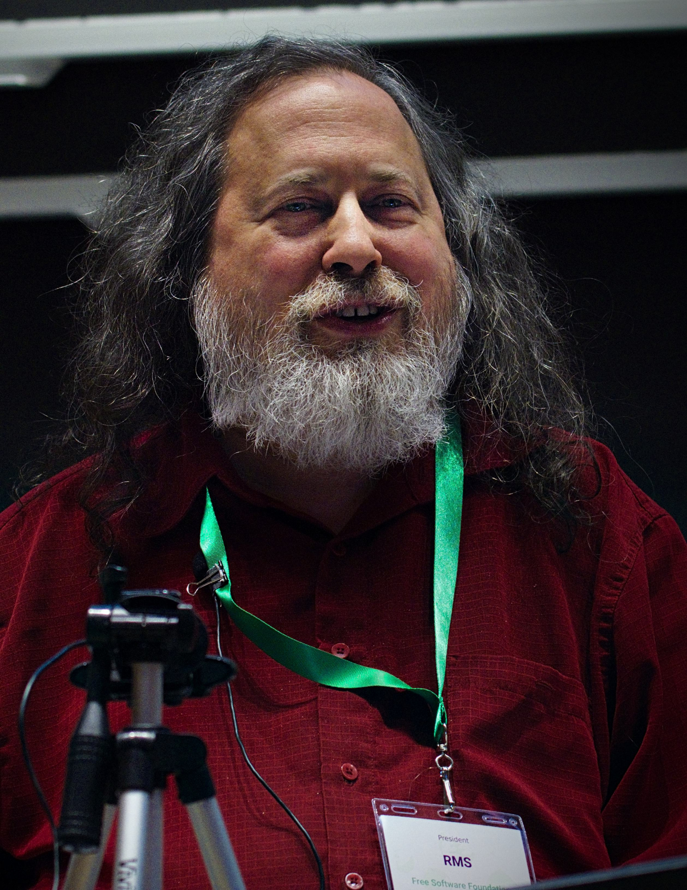
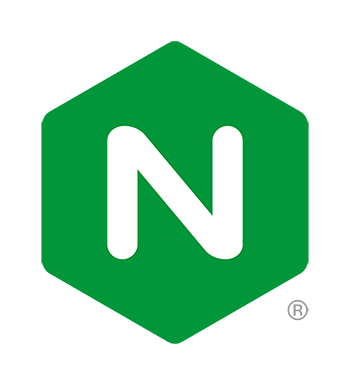
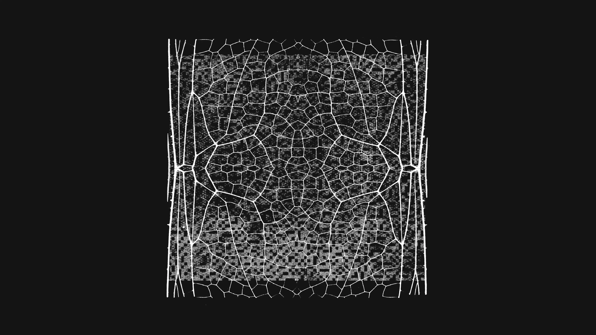
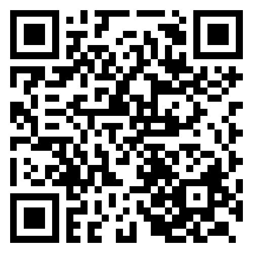
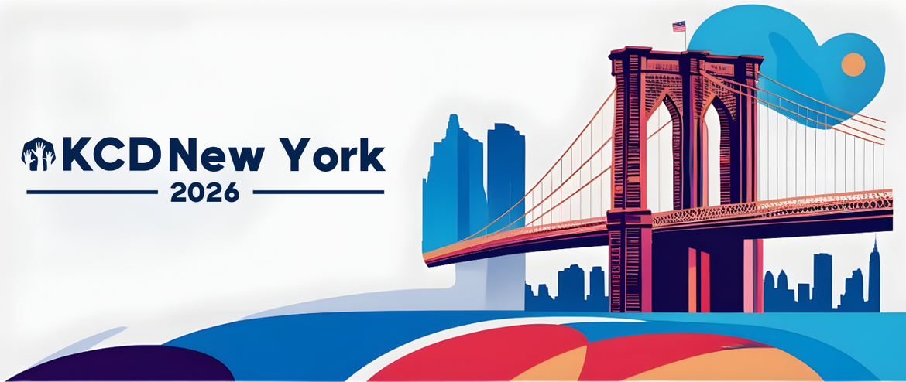
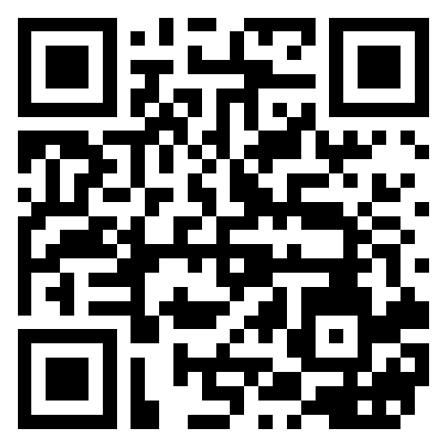
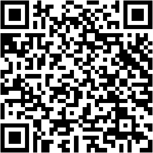

Christopher Tineo
Senior DevOps Engineer · Game Plan Tech
 GCP Pro Cloud Architect
GCP Pro Cloud Architect
 CNCF Kubestronaut
CNCF Kubestronaut
 CKA
CKA
CKS
❯ Free Software Isn't Gratis
Christopher Tineo Senior DevOps Engineer @ Game Plan Tech
SRE Day NYC 2026 Q2
❯ whoami
Senior DevOps Engineer · Game Plan Tech
GCP Pro Cloud Architect
CNCF Kubestronaut
CKA
The "free" in free software has a price someone pays.
What it looks like when the bill comes due.
To companies, to maintainers, to the ecosystem.
Treat open source like the infrastructure it is.
What you do on Monday morning.
"Free" has a price. Someone always pays it.
In a typical enterprise codebase, somewhere between 70% and 90% of the lines of code come from public open source packages — not from the engineers who shipped the product.
Source: Synopsys Open Source Security and Risk Analysis (OSSRA) report, recent editions. The number moves around year to year, but the order of magnitude does not.
❯ clarification
Two overlapping but distinct philosophies. Same code, different why.
Free software
A movement
Open source
A methodology
Most projects are both. The difference is the why, not the what.

Stallman chose "free" to mean freedom (speech), not price (beer).
The English language has only one word for both, causing 40 years of etymological confusion.
This talk is about the gap between them — and who pays for it.
What it looks like when the bill comes due.

The front door to your Kubernetes cluster.
Routes external traffic into your services.
Maintained by a handful of unpaid SIG Network volunteers.
~60%
Scope at end of 2025
of deployments relied on ingress-nginx as an ingress controller.
Source: CNCF End User TAB · Apr 2026
Project kubernetes/ingress-nginx · Steward Kubernetes SIG Network
Source: Kubernetes project — Ingress NGINX retirement statement (kubernetes.io, Jan 2026)
❯ what they actually do ($0 budget · after hours · on weekends)
Triage & Review · CVE Patching · Release Management · End-User Support
@rikatz · Dec 15, 2024 · kubernetes/org#5305
"I need some time for myself, and I am not really being able to take care of the project and my personal life together :)"
The CVE mania
Eight significant CVEs and RCEs in two years — and the maintainers who had to fix them were not being paid to do it.
❯ 2022 · June
"we're drowning" mailing list call
❯ 2024 · May
CVE cascade forces emergency patches
❯ 2025 · March
CVE-2025-1974 RCE forces final EOL
"This is fine." 🔥
To companies. To maintainers. The AI threat.
❯ what EOL actually costs
$ unplanned migration work
$ security risk on EOL versions
$ dev hours to qualify replacement
$ roadmap opportunity cost
For a typical mid-size organization, an unplanned ingress controller migration is measured in engineer-months, not engineer-hours.
Multiply that by every project in your stack that could go EOL this year, and you have a massive budget line item that didn't exist a decade ago.
@BenTheElder · Steering Committee · Jan 21, 2026
"Nobody has been paying anyone to work on this software for some time, it has been entirely volunteer driven and they've been overwhelmed."
The cost is the most expensive line item in this talk: time, health, and career impact. A salary or protected time would have changed the math.
The CVE cascade turned volunteer contributions into an unpaid second job with constant security liability.

Black Duck 2026 OSSRA
Open source vulnerabilities doubled to 581 per codebase. 87% of codebases are at risk.
Anthropic Glasswing
Mythos Preview found 10k+ high/critical bugs (Mozilla: 271, Cloudflare: 400). Open-source scan: 90.6% true positive rate (on track for 3,900 validated).
Threat Acceleration
Bad actors also have these AI models, accelerating zero-day discovery and exploitation.
Stop calling it free. Start treating it like infrastructure.
If 70–90% of your code is open source, dependencies are your infrastructure.
And we already know how to treat critical infrastructure:
Monitor
Watch for advisories, EOL announcements, maintainer health signals.
Set SLOs
Define what "healthy" means for each critical dependency.
Staff it
Assign owners. Budget time. Treat maintainer relationships as a critical asset.
What are you actually depending on? Generate a complete SBOM. Know your transitive graph.
For each critical dependency: how many maintainers? Who funds it? Is there a bus factor of one?
Direct sponsorship, GitHub Sponsors, Open Collective, foundation dues, Tidelift — pick at least one per critical dep.
Time, code, reviews, documentation, security disclosures. The most valuable currency isn't money; it's attention.
Run this loop quarterly: Discover → Assess → Fund → Contribute
❯ the new reality
AI is driving down development costs, flipping the build-vs-buy equation. Traditional SaaS margins are eroding.
OSS is the Engine
We build on open source—and pay our share by contributing fixes upstream.
Game Plan Tech · case study
Added GCS Workload Identity support to Percona MongoDB Operator (#2315) for a federal compliance workload.
Rather than maintaining a private fork, contributing upstream solved it for us and the community.
What you do on Monday morning.
If you lead engineers
If you're on a platform / SRE team
If you're an individual contributor
❯ terminal
GitHub CLI (gh)
GitLab CLI (glab)
This is fine.
It's only fine if we pay for it.
Thank you · Christopher Tineo · Game Plan Tech
kubernetes.io/blog/2026/01/29/ingress-nginx-statement · gnu.org/philosophy/free-sw


June 10, 2026
Voucher: KCDNY26-CHRIS-ORGANIZER-FREE
Scan the QR code or enter the voucher at checkout. One ticket per attendee.

linkedin.com/in/christopher-tineo

github.com/TineoC/talks